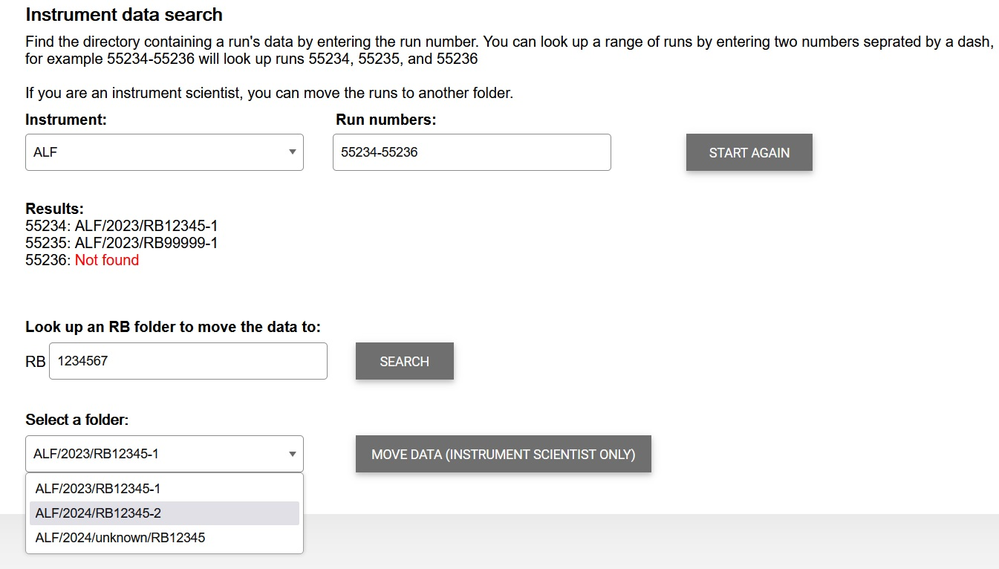

ISIS DAaaS Tech Update - July 2024
This is an update on work to the ISIS data analysis service since the last tech update in January 2024.
Workspaces
Based on feedback received in the January tech update, we have added a feature to the website that shows instrument scientists how many workspaces of each type are in use and the maximum number that can be claimed.
This can be seen by navigating to the create workspace page and selecting a type of workspace.
Instrument Data Cache
In February we replaced the ISIS Archive with the Instrument Data Cache as the primary means to access instrument data on DAaaS workspaces.
Since we deployed the Instrument Data Cache, we have made several changes to it based on user feedback.
1. Data can now be looked up by cycle number in addition to the calendar year it was produced. For example, to find WISH data produced in cycle 24/1, one could navigate to /data/instrument/WISH/CYCLE20241 and find all RBs from that cycle, in a manner similar to the ISIS Archive
2. Initially, we allowed the ISIS Archive to be mounted again by entering your federal credentials. Instead, the Archive is now automatically mounted for instrument scientists. There were also complaints that the mount was slow, but this should be resolved now.
As of Mantid 6.10, Mantid should now be able to quickly look up runs on the instrument data cache.
4. We have developed an interface that allows instrument scientists to move batches of run data around on the data cache. This will be part of the data section of the website. It will be available for testing as part of a wider update to the website in coming months.
Once this has been deployed we can make progress on a solution for Xpress experiments.
Training
Several training courses have been run using our training platform including the Neutron Training Course and a workshop for the Disordered Materials UGM.
If you are interested in running a course, check out our Training site
To-do list from Tech Update January 2024
Keep cycle folder structure as it was in Archive. (Done)
Files in RB0 folders are also available from Cycle folders. (Done)
The workspace claim page will display available workspaces. (Done)
Develop a solution for managing data with unknown RB numbers. (WIP)
Work out a better way to mount the ISIS archive efficiently for instrument scientists. (Done)
Work out a better way to help instrument scientists setting up Mantid default directories. (Done)
Work out a solution for moving files from one RB folder to the other when it was incorrectly scheduled. (WIP)
ISIS research groups are to review ISIS Specifications. (Done)